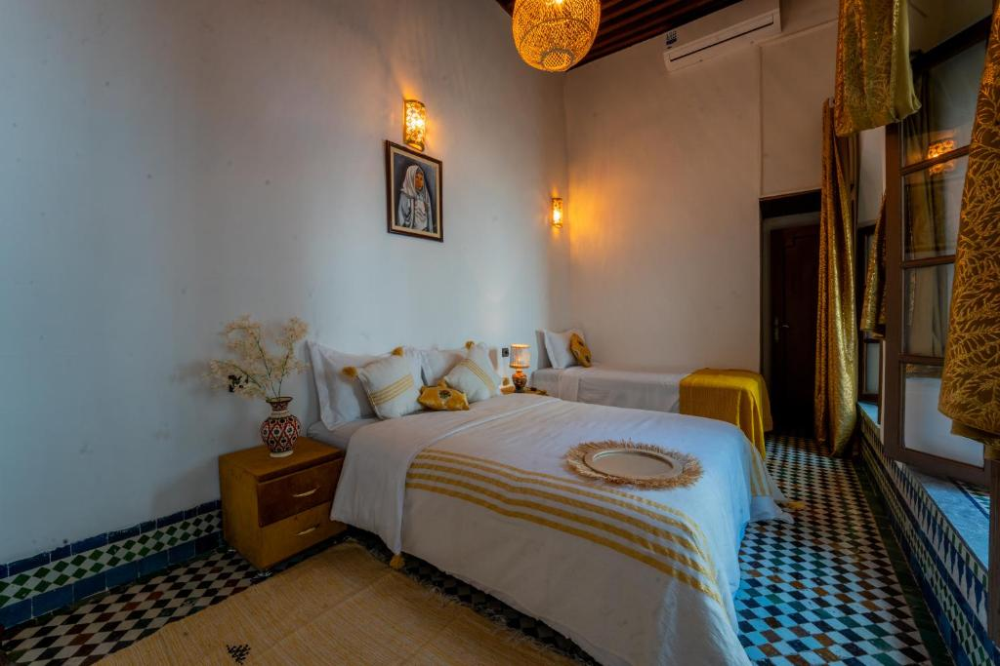
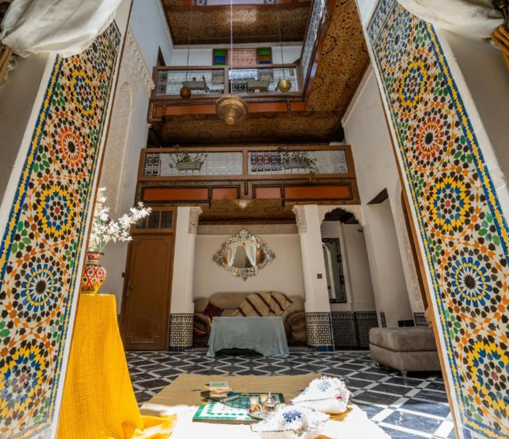
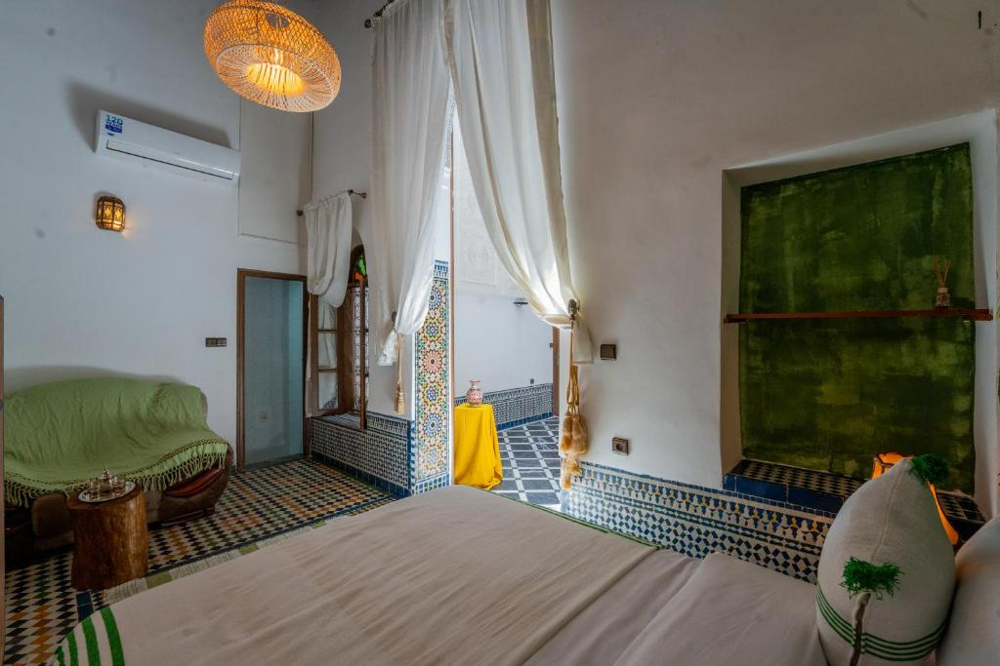
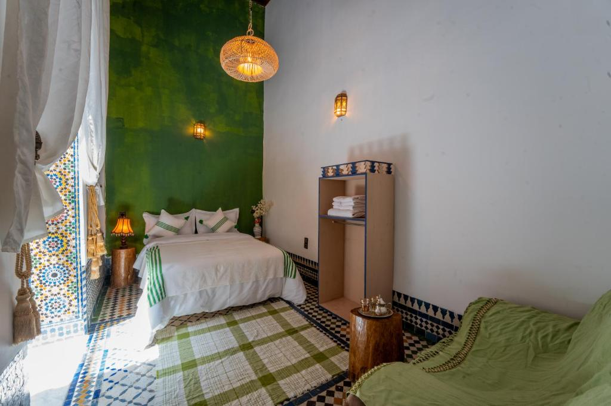
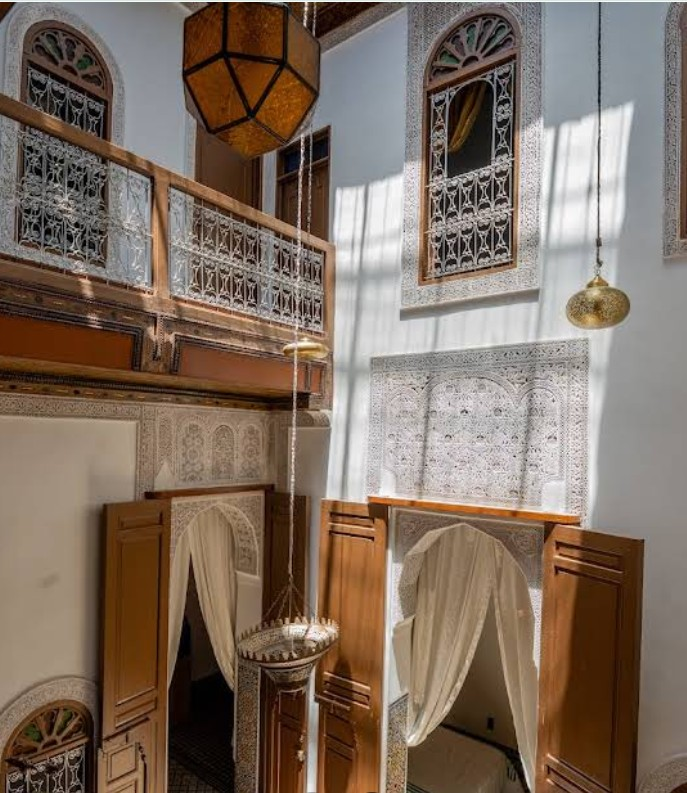
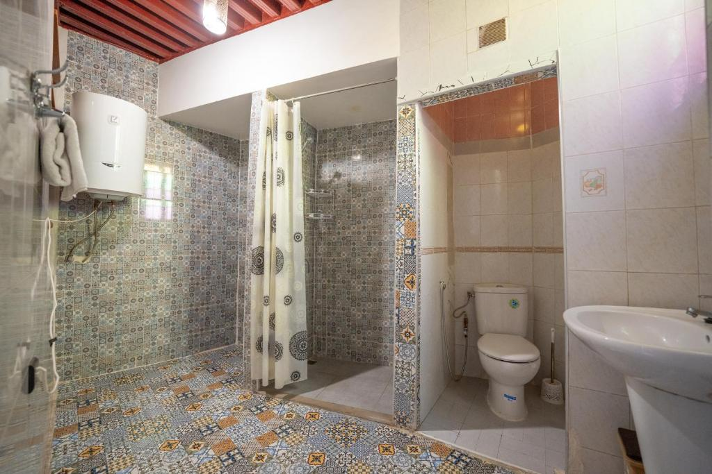
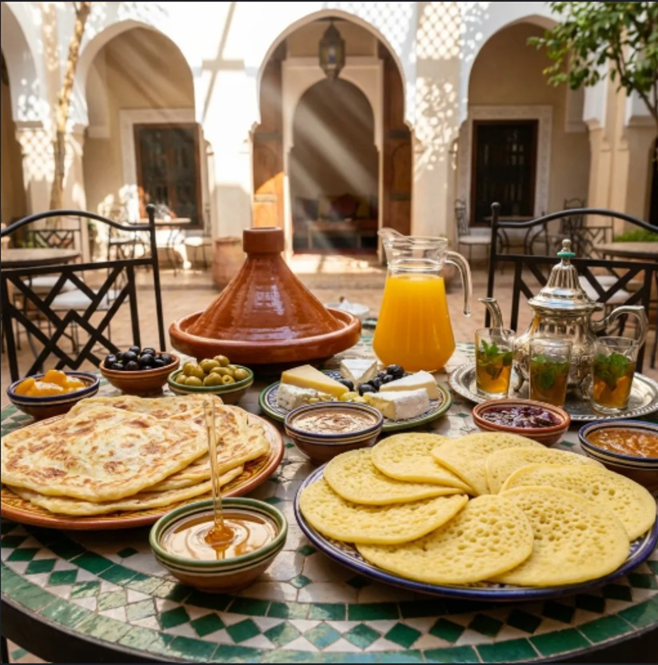

Chambre Jasmin
Une chambre élégante et chaleureuse, pensée pour offrir un séjour confortable dans l’atmosphère authentique du riad.
À partir de[430] MAD / nuit
[Au cœur de la médina de Fès, Riad Lik Fes vous invite à vivre une expérience authentique et raffinée, entre architecture traditionnelle, sérénité et art de vivre marocain.]

Riad Lik Fes vous accueille au cœur de la médina de Fès, dans un cadre où l’authenticité de l’architecture marocaine rencontre une atmosphère chaleureuse et paisible. Découvrez le charme des détails traditionnels, profitez de la sérénité de la cour intérieure et vivez une expérience au plus près de l’âme de la ville.
Pensé comme une invitation à découvrir Fès autrement, le riad offre un cadre intime et accueillant pour se détendre après une journée passée à explorer les souks, les monuments et les ruelles de la médina.
Découvrez nos chambres Pensées pour offrir confort, sérénité et authenticité, nos chambres vous invitent à profiter pleinement de votre séjour au cœur de la médina de Fès. Chaque espace associe l’esprit traditionnel marocain à une atmosphère chaleureuse et reposante.

Une chambre élégante et chaleureuse, pensée pour offrir un séjour confortable dans l’atmosphère authentique du riad.

Un espace raffiné mêlant inspiration marocaine et confort contemporain, idéal pour profiter pleinement de votre séjour à Fès.

Une chambre pleine de caractère, inspirée par l’art de vivre marocain et l’atmosphère paisible de la médina.
Une connexion Wi-Fi est disponible pour rester connecté pendant votre séjour.
Profitez d’un espace extérieur agréable pour vous détendre et admirer l’atmosphère de la médina.
Commencez la journée avec un petit-déjeuner aux saveurs traditionnelles marocaines.
Une équipe attentive vous accompagne pour rendre votre séjour à Fès aussi agréable que possible.



Commencez votre journée dans l’atmosphère chaleureuse du Riad Lik Fes et découvrez une cuisine inspirée des traditions marocaines. Dans un cadre authentique et convivial, savourez un moment gourmand avant de partir à la découverte de la médina de Fès.
Demander le menuLe riad se trouve à l'intérieur de la médina de Fès, à proximité des principaux souks et monuments historiques.
Basé sur 1 avis Google
« *« L’accueil, le personnel au petit soin et l’emplacement »* »
« *« J'ai tout aimé surtout l'accueil de Simohamed »* »
« *« L'emplacement du Riad est à quelques mètres de la médina de Fès, position idéale. Rapport qualité-prix imbattable ! Le Riad est décoré avec... »* »